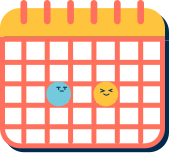

精選功能
Primary function

快速地創建記錄
快速創建日誌記錄。用户無須敲字，即可紀錄您的日常生活。您也可添加相應的位置，筆記和想法。
分析您的情緒
Mooding的分析引擎幫您找出影響積極和消極情緒的習慣。
精選測驗、文章
Mooding整理出眾多心理量表及情緒排解文章，供您免費測驗閱讀。

線上諮詢
Mooding 線上諮詢讓您無需舟車勞頓，即可在安心的私人空間，進行諮商。
關於Mooding
About us


精選文章
ArticlesJune.30.2022
與壓力共舞
面對壓力，學習良好的壓力管理能力似乎已成為現代生活中必要的課題。而好的壓力因應技巧千千百百種，但是真正...
357人瀏覽
May.03.2022
談分手調適，分手後該怎麼辦?
時間常是療癒傷口的良藥，當自己面臨一段重要關係的結束，不管原先的關係...
487人瀏覽
June.17.2022
你的獨一無二，值得被真心對待
不帶條件地接納全部的自己，無論你覺得這有多糟、多自卑，都不要緊，它是...
630人瀏覽
April.25.2022
為什麼家人間彼此相愛卻又總是互相傷害？
家是人們的避風港，家人的支持與關懷是一個人向前邁進的動力，也是...
704人瀏覽
聽聽他們的心得
Reviews
Taylor Swift

Mooding整理出眾多情緒排解文章，讓我簡單快速的排解情緒問題，對我來說很真的有幫助。

Ed Sheeran
Mooding的諮商團隊幫助我走出多年的憂鬱陰霾，我每天會寫日記，且持續追蹤我的情緒變化。

Billie Eilish
Mooding的日記系統介面真的很可愛且好上手，讓我可以有動力持續每天登入寫日記。
Anne-Marie
Mooding整理出眾多情緒排解文章，讓我簡單快速的排解情緒問題，對我來說很真的有幫助。
Sam Smith
Mooding的日記系統介面真的很可愛且好上手，讓我可以有動力持續每天登入寫日記。
準備好開始了解您的情緒?